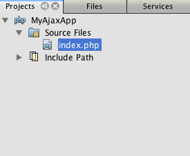

Apache NetBeans (incubating)
Apache NetBeans (incubating)Just released!
В этом документе содержится введение в Ajax и описываются некоторые из функций в IDE NetBeans, позволяющий сделать программирование более быстрым и более эффективным процессом при работе с технологиями, связанными с Ajax. На примере низкоуровневых функциональных возможностей Ajax продемонстрирована разработка простого приложения с функцией автозаполнения текстового поля. В документе использованы материалы статьи Грега Мюррея (Greg Murray) и демонстрационное приложение из руководства Использование Ajax при помощи технологии Java.
Ajax – это аббревиатура, означающая "Асинхронный JavaScript и XML" (Asynchronous JavaScript and XML). Основное назначение Ajax состоит в предоставлении веб-приложению возможности эффективной обработки взаимодействия между пользователем и веб-страницей, при этом значительно снижаются требования к обновлению или полной перезагрузке страницы при каждом взаимодействии с пользователем. Такой подход предоставляет широкие возможности при использовании браузера (аналогичные возможностям настольного приложения или веб-приложения на основе подключаемого модуля). Обработка взаимодействия Ajax осуществляется асинхронно в фоновом режиме. Благодаря этому пользователь может продолжать работу со страницей. Взаимодействие Ajax инициируется посредством кода JavaScript. После выполнения взаимодействия Ajax код JavaScript обновляет исходный текст HTML для страницы. Изменения вносятся немедленно без необходимости обновления страницы. Взаимодействия Ajax могут использоваться для выполнения таких задач, как проверка правильности формата вводимых записей на основе серверной логики (непосредственно во время их ввода пользователем), извлечение подробных данных из сервера, динамическое обновление данных на странице и передача элементов форм страницы.

Figure 1. Содержимое этой страницы применимо к IDE NetBeans 7.2, 7.3, 7.4 и 8.0
Для работы с этим учебным курсом требуются программное обеспечение и ресурсы, перечисленные ниже.
| Программное обеспечение или материал | Требуемая версия |
|---|---|
7.2, 7.3, 7.4, 8.0 |
|
7 или 8 |
|
PHP5 |
|
2.2 |
Примечания
-
Настройка среды разработки PHP часто осуществляется с использованием пакета *AMP в зависимости от операционной системы. В частности, это относится к механизму PHP и веб-серверу Apache. Указания по настройке среды приведены в учебной карте по PHP.
-
При этом предполагается, что читатель обладает практическими знаниями в области различных используемых технологий (т.е. HTML, CSS, JavaScript и PHP). В этом документе приведен обзор функциональных возможностей, предоставляемых кодом, однако он не содержит каких-либо пояснений относительно кода на более детальном уровне.
-
Если необходимо сравнить проект с работающим решением, можно загрузить демонстрационное приложение. Использование мастер создания проектов IDE (Ctrl-Shift-N; ⌘-Shift-N в Mac) и выберите тип проекта 'PHP с существующими источниками'. В мастере укажите место на компьютере, куда был загружен исходный код.
Обзор приложения
Предположим, что существует веб-страница, на которой пользователь может выполнять поиск информации о композиторах. Эта страница содержит поле, в которое вводится имя композитора. В примере приложения для поля ввода может использоваться функция автозавершения. Другими словами, пользователь может ввести часть имени композитора, после чего веб-приложение предложит варианты полного имени, перечислив всех композиторов, чьи имена или фамилии начинаются с введенных символов. Таким образом, пользователь может не помнить полное имя композитора, однако функция автозавершения обеспечит быстрый интуитивный доступ к требуемой информации.

Figure 2. Образец приложения отображается в браузере
Реализация функции автозавершения в поле поиска может служить примером возможностей, предоставляемых Ajax. Ajax использует объект XMLHttpRequest для асинхронной передачи запросов и ответов между клиентом и сервером. На следующем рисунке представлена блок-схема операций связи, происходящих между клиентом и сервером.

Figure 3. Диаграма потоков процессов Ajax
Для описания потока операций на блок-схеме можно использовать следующие действия.
-
Пользователь инициирует событие, например, отпускает клавишу при наборе имени. Это приводит к вызову функции JavaScript, которая инициализирует объект
XMLHttpRequest. -
Объект
XMLHttpRequestнастроен с учетом параметра запроса, который включает идентификатор элемента управления, инициировавшего событие, а также произвольное значение, введенное пользователем. Затем объектXMLHttpRequestвыполняет асинхронный запрос к веб-серверу. -
На веб-сервере осуществляется обработка этого запроса с использованием соответствующего объекта, например сервлета или прослушивающего процесса. Из хранилища данных извлекаются необходимые данные и подготавливается ответ, содержащий данные в форме документа XML.
-
Наконец, объект
XMLHttpRequestполучает данные XML с использованием функции ответного вызова, выполняет их обработку и обновляет модель DOM (Document Object Model, объектная модель документов) HTML для отображения страницы, содержащей новые данные.
В данном учебном курсе описан способ создания варианта автозаполнения путем выполнения потока операций процесса, показанного на рисунке выше. Сначала на стороне клиента создаются файлы для страницы представления данных и функции, необходимые для генерации объекта XMLHttpRequest. Затем выполняется настройка на стороне сервера, заключающаяся в создании хранилища данных и бизнес-логики с использованием технологий на основе PHP. Наконец, на стороне клиента реализуется функция обратного вызова callback() и другие функциональные возможности JavaScript, необходимые для обновления DOM HTML.
Программирование на стороне клиента: часть 1
Сначала необходимо создать новый проект PHP в среде IDE.
-
Выберите команду "Файл" > "Новый проект". В области "Категории" выберите PHP. В области "Проекты" выберите Приложение PHP и нажмите кнопку Далее.
-
На втором экране "Имя и местоположение" назовите проект
MyAjaxApp. Поле "Папка источников" позволяет определять местоположение проекта в системе. Для всех остальных параметров примите значения по умолчанию и нажмите кнопку "Далее". image::images/php-name-location.png[title="Мастер создания проектов PHP - панель 'Имя и местоположение'"] -
На третьем экране "Настройки выполнения" укажите способ развертывания приложения. Если среда разработки PHP формировалась путем настройки пакета AMP, необходимо выбрать в раскрывающемся списке пункт *Локальный веб-сайт и указать URL-адрес проекта, который должен использоваться в браузере.
-
Выберите параметр "Скопировать файлы из папки источников в другое расположение". Затем в поле "Скопировать в папку" введите путь к местоположению для развертывания на сервере. На сервере Apache по умолчанию используется каталог
htdocs.

-
Нажмите кнопку Готово. Среда IDE создает папку проекта в файловой системе, после чего этот проект открывается в среде IDE.
Также можно использовать мастер проектов для добавления в проект платформенной поддержки (предоставляется в действии 4 мастера проектов)
В редакторе среды IDE создается и открывается значение страницы index.php по умолчанию. Кроме того, проект появляется в окне "Проекты".

Figure 4. В окне 'Проекты' отображается проект MyAjaxApp
-
Перед написанием программы попробуйте запустить приложение в целях проверки правильности настройки взаимосвязи между средой IDE, сервером и браузером.
В редакторе среды IDE добавьте оператор echo к начальной странице:
<?php
// put your code here
*echo "<h2>Hello World!</h2>";*
?>-
В окне "Проекты" щелкните правой кнопкой мыши узел проекта и выберите команду "Выполнить". В среде IDE открывается браузер по умолчанию, и на экране появляется сообщение "Hello World", только что созданное в
index.php.
Примечание. При возникновении ошибок при настройке проекта или создании соединения между IDE, сервером и браузером более детальное описание см. в разделе Настройка проекта PHP. Дополнительные сведения относительно настройки среды содержатся в учебной карте PHP.
Работа с редактором HTML

Figure 5. На палитре отображаются элементы HTML
Теперь, после выполнения проверки правильности настройки среды, можно приступить к преобразованию страницы-указателя в интерфейс автозаполнения, который будет отображаться для пользователей. Поскольку для страницы-указателя не требуются сценарии на стороне сервера, начните с создания страницы HTML и установки ее в качестве точки входа приложения.
Одним из преимуществ использования среды IDE является то, что используемый редактор обеспечивает возможность применения функции автозавершения кода, что позволяет опытным пользователям значительно увеличить свою производительность при написании кода. Редактор среды IDE, как правило, обеспечивает адаптацию к применяемой технологии. Таким образом, при работе со страницей HTML нажатие сочетания клавиш автозавершения кода (CTRL+ПРОБЕЛ) приводит к тому, что пользователю предлагаются варианты тегов HTML и атрибутов. Далее мы увидим, что то же самое справедливо и для других технологий, например, CSS и JavaScript.
Вторым важным преимуществом является возможность использования палитры в среде IDE. Эта палитра предоставляет удобные в работе шаблоны для элементов, часто используемых в технологиях программирования. Необходимо просто выбрать отдельный элемент и перетащить его в определенное место файла, открытого в редакторе исходного кода.
Для отображения крупных значков (как в примере) необходимо щелкнуть палитру правой кнопкой мыши и выбрать пункт "Отображать крупные значки".
-
В окне "Проекты" щелкните правой кнопкой мыши узел проекта
MyAjaxAppи выберите в меню "Создать" пункт "Файл HTML". -
В мастере создания файла HTML введите имя файла
index, затем нажмите кнопку Готово. В редакторе открывается созданный файлindex.html. -
Замените содержимое файла на следующее:
<!DOCTYPE HTML PUBLIC "-//W3C//DTD HTML 4.01 Transitional//EN"
"http://www.w3.org/TR/html4/loose.dtd">
<html>
<head>
<meta http-equiv="Content-Type" content="text/html; charset=UTF-8">
<title>Auto-Completion using AJAX</title>
</head>
<body>
<h1>Auto-Completion using AJAX</h1>
</body>
</html>-
Для описания назначения текстового поля следует добавить соответствующий пояснительный текст. Непосредственно под тегами
<h1>можно скопировать и вставить следующий текст:
<p>This example shows how you can do real time auto-completion using Asynchronous
JavaScript and XML (Ajax) interactions.</p>
<p>In the form below enter a name. Possible names that will be completed are displayed
below the form. For example, try typing in "Bach," "Mozart," or "Stravinsky,"
then click on one of the selections to see composer details.</p>-
Добавьте к странице форму HTML. Для этого можно использовать элементы, содержащиеся в палитре среды IDE. Если палитра не открыта, выберите в главном меню "Окно" > "Палитра". Затем перейдите к узлу "Формы HTML", выберите элемент "Форма" и перетащите его на страницу под только что добавленные теги
<p>. Появится диалоговое окно "Вставить форму". Введите следующее:-
Action: response.jsp;
-
Method: GET;
-
Имя: autofillform image::images/php-insert-form.png[title="Диалоговое окно 'Вставить форму'"]
-
Нажмите кнопку "ОК". Теги HTML <form> вставляются в страницу, содержащую указанные атрибуты. (Метод GET применяется по умолчанию, и, следовательно, не объявляется явно).
-
Добавьте к странице таблицу HTML. В категории палитры "HTML" выберите элемент "Таблица" и перетащите его непосредственно под теги
<form>. Откроется диалоговое окно "Вставить таблицу". Введите следующее:-
Рядов : 2
-
Столбцов : 2
-
Размер границы : 0
-
Ширина: 0
-
Интервал между ячейками: 0
-
Заполнение ячеек: 5 image::images/insert-table.png[title="Диалоговое окно 'Вставить таблицу'"]
-
-
Щелкните правой кнопкой мыши редактор исходного кода и выберите команду "Форматировать". Последует выравнивание кода. Теперь форма должна выглядеть следующим образом:
<form name="autofillform" action="autocomplete.php">
<table border="0" cellpadding="5">
<thead>
<tr>
<th></th>
<th></th>
</tr>
</thead>
<tbody>
<tr>
<td></td>
<td></td>
</tr>
<tr>
<td></td>
<td></td>
</tr>
</tbody>
</table>
</form>-
В первый столбец первой строки таблицы введите следующий текст (изменения выделены полужирным шрифтом):
<td>*<strong>Composer Name:</strong>*</td>-
Во второй столбец первой строки вручную введите указанный ниже код (вместо перетаскивания поля "Ввод текста" из окна "Палитра").
<input type="text"
size="40"
id="complete-field"
onkeyup="doCompletion();">При вводе кода можно использовать встроенную в среду IDE функцию автозавершения кода. Например, введите <i, а затем нажмите CTRL+ПРОБЕЛ. Список предлагаемых вариантов выбора отображается под курсором, а в расположенном выше поле появляется описание выбранного элемента. Для получения возможных вариантов выбора при написании кода достаточно в любой момент нажать в редакторе исходного кода сочетание клавиш CTRL+ПРОБЕЛ. Кроме того, при наличии единственного возможного варианта выбора нажатие CTRL+ПРОБЕЛ приведет к автоматическому завершению кода с использованием элемента с этим именем.
image::images/code-completion.png[title="Нажатие Ctrl-Space инициирует автозавершение кода в редакторе исходного кода"]
Атрибут onkeyup, введенный выше, указывает на функцию JavaScript с именем doCompletion(). Эта функция вызывается при каждом нажатии клавиши в текстовом поле формы и соответствует вызову JavaScript на приведенной выше блок-схеме Ajax.
10. Перед переходом к работе с редактором JavaScript, замените файлом index.html файл index.php в качестве точки входа приложения.
Щелкните правой кнопкой мыши узел проекта в окне "Проекты" и выберите команду "Свойства". Выберите категорию Конфигурация выполнения, затем введите index.html в поле 'Файл индекса'. image::images/php-entry-point.png[title="Укажите точку входа приложения в окне 'Свойства проекта'"]
11. Нажмите кнопку "ОК" для подтверждения изменений и закройте окно "Свойства проекта".
12. Выполните проект и посмотрите, как он выглядит в браузере. Нажмите кнопку 'Запустить проект' ( image::images/run-project-btn.png[] ). Файл index.html открывается в браузере по умолчанию.
image::images/index-page.png[title="Выполните проект для просмотра его текущего состояния в браузере"]
Работа с редактором JavaScript
Редактор JavaScript в среде IDE предоставляет целый ряд расширенных возможностей редактирования, таких как интеллектуальное автозавершение кода, семантическое выделение, быстрое переименование, возможности переработки и многие другие функции. Дополнительные сведения о функциях редактирования JavaScript в среде IDE см. в разделе Создание файлов JavaScript Руководства пользователя по разработке приложений в IDE NetBeans. Подробную спецификацию см. по адресу http://wiki.netbeans.org/JavaScript.
Возможность автозавершения кода JavaScript автоматически предоставляется при кодировании в файлах .js, а также внутри тегов <script> и при работе с другими технологиями (например, HTML, RHTML, JSP, PHP). При использовании редактора JavaScript среда IDE предоставляет информацию о совместимости с браузерами в зависимости от типов и версий браузеров, указанных на экране "JavaScript Options". Откройте экран "ПараметрыJavaScript", выбрав "Сервис" > "Параметры" ("NetBeans" > "Параметры для Mac"), а затем – "Разное" > "JavaScript".

Figure 6. Панель 'Параметры' JavaScript
Среда IDE предоставляет встроенные возможности поддержки для Firefox, Internet Explorer, Safari и Opera. На экране "Параметры JavaScript" можно также указать версию механизма JavaScript, по отношению к которой применяется автозавершение кода.
Добавьте файл JavaScript к приложению и выполните doCompletion().
-
В окне "Проекты" щелкните правой кнопкой мыши узел проекта и выберите "Создать" > "Файл JavaScript". (Если файл JavaScript отсутствует в списке, выберите "Прочее". Затем выберите файл JavaScript из категории "Web" мастера создания файла.
-
Назовите файл
javascriptи нажмите кнопку "Готово". Новый файл JavaScript появится в окне "Проекты" и может быть открыт в редакторе. -
Введите приведенный ниже код в файл
javascript.js.
var req;
var isIE;
function init() {
completeField = document.getElementById("complete-field");
}
function doCompletion() {
var url = "autocomplete.php?action=complete&id=" + escape(completeField.value);
req = initRequest();
req.open("GET", url, true);
req.onreadystatechange = callback;
req.send(null);
}
function initRequest() {
if (window.XMLHttpRequest) {
if (navigator.userAgent.indexOf('MSIE') != -1) {
isIE = true;
}
return new XMLHttpRequest();
} else if (window.ActiveXObject) {
isIE = true;
return new ActiveXObject("Microsoft.XMLHTTP");
}
}С помощью этого кода выполняется простая проверка совместимости веб-браузеров Firefox 3 и Internet Explorer версий 6 и 7). Если требуется добавить более надежный код, устраняющий ошибки совместимости, используйте сценарий для определения браузера с веб-сайта http://www.quirksmode.org.
-
Вернитесь к
index.phpи добавьте справочную информацию в файл JavaScript между тегами<head>.
<script type="text/javascript" src="javascript.js"></script>Для быстрого перехода между страницами, открытыми в редакторе, можно воспользоваться сочетанием клавиш CTRL+TAB.
-
Вставьте вызов
init()после открывающего тега<body>.
<body *onload="init()"*>Это обеспечит выполнение вызова init() при каждой загрузке страницы.
Роль doCompletion() состоит в следующем:
-
создание URL-адреса к местоположению, содержащему данные, которые могут использоваться на стороне сервера;
-
инициализация объекта
XMLHttpRequest; -
запрос объекта
XMLHttpRequestдля передачи асинхронного запроса в сервер.
Объект XMLHttpRequest является основным объектом Ajax и своего рода фактическим стандартным решением для обеспечения асинхронной передачи данных XML по HTTP. Асинхронное взаимодействие подразумевает возможность продолжения обработки браузером событий на странице даже после передачи запроса. Данные передаются в фоновом режиме и могут автоматически загружаться на страницу без необходимости ее обновления.
Следует отметить, что объект XMLHttpRequest фактически создается с помощью функции initRequest(), которая вызывается функцией doCompletion(). Эта функция позволяет выполнять проверку возможности распознавания браузером запроса XMLHttpRequest, и – в случае положительного ответа – создавать объект XMLHttpRequest. В противном случае, с ее помощью выполняется проверка на ActiveXObject (XMLHttpRequest для Internet Explorer 6), и если результат идентификации является положительным, создается ActiveXObject.
При создании объекта необходимо определить три параметра XMLHttpRequest: URL-адрес, метод HTTP (GET или POST) и допустимость использования асинхронного взаимодействия. В вышеупомянутом примере эти параметры определяются следующим образом:
-
URL-адрес
autocomplete.phpи текст, введенный пользователем в полеcomplete-field:
var url = "autocomplete.php?action=complete&id=" + escape(completeField.value);-
GETозначает, что взаимодействия HTTP используют методGET; -
trueозначает, что взаимодействие является асинхронным:
req.open("GET", url, true);Если взаимодействие определено как асинхронное, необходимо указать функцию обратного вызова. Функция обратного вызова для этого взаимодействия определяется при помощи следующего оператора:
req.onreadystatechange = callback;Затем следует определить функцию callback(). Взаимодействие HTTP инициируется при вызове XMLHttpRequest.send(). Это действие соответствует запросу HTTP, который передается на веб-сервер (см. представленную выше блок-схему).
Программирование на стороне сервера
IDE NetBeans обеспечивает комплексную поддержку для веб-разработок с помощью PHP. Существует возможность настройки среды разработки с использованием пакета *AMP, что позволяет ускорить и упростить редактирование и развертывание в среде IDE. В среде IDE можно настроить окружение с локальным сервером, а также с удаленным, с помощью FTP или SFTP. Также в окне "Параметры PHP" среды IDE можно настроить внешний отладчик, например, Xdebug, и настроить тестирование модулей с помощью PHPUnit. Выберите в меню "Сервис" пункт "Параметры"; в меню "NetBeans" пункт "Параметры" в Mac OS, а затем переключитесь на вкладку "PHP". Редактор PHP предоставляет стандартные возможности редактирования, такие как автозавершение кода, выделение синтаксиса, выделение случаев использования, переработка, шаблоны кода, всплывающие окна документации, переходы по коду, предупреждения редактора, а в версии NetBeans 6.9 - выделение ошибок синтаксиса. На странице Видеокурсы и демонстрации NetBeans предоставлены экранные демонстрации работы с PHP.
Для приложений, использующих базы данных, среда IDE обеспечивает всестороннюю поддержку практически всех основных баз данных, в частности MySQL. Для получения дополнительных сведений обратитесь к разделам Демо-ролик MySQL NetBeans и Интеграция базы данных.
Бизнес-логика для формируемого приложения автозаполнения предполагает обработку запросов путем извлечения данных из хранилища данных, их последующую подготовку и передачу ответа. В данном случае эта концепция реализована с использованием файла PHP под именем autocomplete. Перед началом создания кода для файла необходимо настроить хранилище данных и функциональные возможности, требуемые для доступа к данным со стороны этого файла.
Создание хранилища данных
В этом простом приложении будет создан класс Composer, позволяющий бизнес-логике получать данные из записей в массиве composers. Затем будет создан класс ComposerData, сохраняющий данные о композиторах с помощью массива.
-
Щелкните правой кнопкой мыши узел проекта в окне "Проекты" и выберите "Создать > Класс PHP". -
Назовите класс
Composerи нажмите кнопку "Готово". Проект будет создан и открыт в редакторе. -
Вставьте следующий код в класс (изменения помечены полужирным шрифтом).
<?php
class Composer {
*public $id;
public $firstName;
public $lastName;
public $category;
function __construct($id, $firstName, $lastName, $category) {
$this->id = $id;
$this->firstName = $firstName;
$this->lastName = $lastName;
$this->category = $category;
}*
}
?>Создайте класс ComposerData.
-
Щелкните правой кнопкой мыши узел проекта в окне "Проекты" и выберите "Создать > Класс PHP". -
Назовите класс
ComposerDataи нажмите кнопку "Готово". Последует создание и открытие проекта в редакторе среды IDE. -
Добавьте выражение
requireв начало класса, чтобы указать, что классу требуется только что созданный классComposer.php(изменения выделены полужирным шрифтом).
<?php
*require "Composer.php";*
class ComposerData {
}-
Вставьте в класс в редакторе следующий код (изменения выделены полужирным шрифтом).
<?php
require "Composer.php";
class ComposerData {
*public $composers;
function __construct() {
$this->composers = array(
new Composer("1", "Johann Sebastian", "Bach", "Baroque"),
new Composer("2", "Arcangelo", "Corelli", "Baroque"),
new Composer("3", "George Frideric", "Handel", "Baroque"),
new Composer("4", "Henry", "Purcell", "Baroque"),
new Composer("5", "Jean-Philippe", "Rameau", "Baroque"),
new Composer("6", "Domenico", "Scarlatti", "Baroque"),
new Composer("7", "Antonio", "Vivaldi", "Baroque"),
new Composer("8", "Ludwig van", "Beethoven", "Classical"),
new Composer("9", "Johannes", "Brahms", "Classical"),
new Composer("10", "Francesco", "Cavalli", "Classical"),
new Composer("11", "Fryderyk Franciszek", "Chopin", "Classical"),
new Composer("12", "Antonin", "Dvorak", "Classical"),
new Composer("13", "Franz Joseph", "Haydn", "Classical"),
new Composer("14", "Gustav", "Mahler", "Classical"),
new Composer("15", "Wolfgang Amadeus", "Mozart", "Classical"),
new Composer("16", "Johann", "Pachelbel", "Classical"),
new Composer("17", "Gioachino", "Rossini", "Classical"),
new Composer("18", "Dmitry", "Shostakovich", "Classical"),
new Composer("19", "Richard", "Wagner", "Classical"),
new Composer("20", "Louis-Hector", "Berlioz", "Romantic"),
new Composer("21", "Georges", "Bizet", "Romantic"),
new Composer("22", "Cesar", "Cui", "Romantic"),
new Composer("23", "Claude", "Debussy", "Romantic"),
new Composer("24", "Edward", "Elgar", "Romantic"),
new Composer("25", "Gabriel", "Faure", "Romantic"),
new Composer("26", "Cesar", "Franck", "Romantic"),
new Composer("27", "Edvard", "Grieg", "Romantic"),
new Composer("28", "Nikolay", "Rimsky-Korsakov", "Romantic"),
new Composer("29", "Franz Joseph", "Liszt", "Romantic"),
new Composer("30", "Felix", "Mendelssohn", "Romantic"),
new Composer("31", "Giacomo", "Puccini", "Romantic"),
new Composer("32", "Sergei", "Rachmaninoff", "Romantic"),
new Composer("33", "Camille", "Saint-Saens", "Romantic"),
new Composer("34", "Franz", "Schubert", "Romantic"),
new Composer("35", "Robert", "Schumann", "Romantic"),
new Composer("36", "Jean", "Sibelius", "Romantic"),
new Composer("37", "Bedrich", "Smetana", "Romantic"),
new Composer("38", "Richard", "Strauss", "Romantic"),
new Composer("39", "Pyotr Il'yich", "Tchaikovsky", "Romantic"),
new Composer("40", "Guiseppe", "Verdi", "Romantic"),
new Composer("41", "Bela", "Bartok", "Post-Romantic"),
new Composer("42", "Leonard", "Bernstein", "Post-Romantic"),
new Composer("43", "Benjamin", "Britten", "Post-Romantic"),
new Composer("44", "John", "Cage", "Post-Romantic"),
new Composer("45", "Aaron", "Copland", "Post-Romantic"),
new Composer("46", "George", "Gershwin", "Post-Romantic"),
new Composer("47", "Sergey", "Prokofiev", "Post-Romantic"),
new Composer("48", "Maurice", "Ravel", "Post-Romantic"),
new Composer("49", "Igor", "Stravinsky", "Post-Romantic"),
new Composer("50", "Carl", "Orff", "Post-Romantic"),
);
}*
}
?>Создание бизнес-логики
Создайте сервлет для обработки URL-адреса autocomplete, получаемого при входящем запросе. Вместо создания нового файла PHP с помощью мастера создания файлов, как показано в прошлом разделе, измените для этой цели существующий файл index.php.
-
В окне "Проекты" щелкните узел файла
index.php. Появляется поле редактирования имени файла. image::images/edit-file-name.png[title="Щелкните узлы файлов для редактирования имен"] -
Назовите файл
autocompleteи нажмите ENTER. Дважды щелкните файлautocomplete.php, чтобы открыть его в редакторе. -
Замените код файла на следующий.
<?php
require_once("ComposerData.php");
session_start();
$composerData = new ComposerData();
$composers = $composerData->composers;
$results = array();
$namesAdded = false;
// simple matching for start of first or last name, or both
if(isset($_GET['action']) && $_GET['action'] == "complete") {
foreach($composers as $composer) {
if(!is_numeric($_GET['id']) &&
// if id matches first name
(stripos($composer->firstName, $_GET['id']) === 0 ||
// if id matches last name
stripos($composer->lastName, $_GET['id']) === 0) ||
// if id matches full name
stripos($composer->firstName." ".$composer->lastName, $_GET['id']) === 0) {
$results[] = $composer;
}
}
// prepare xml data
if(sizeof($results) != 0) {
header('Content-type: text/xml');
echo "<composers>";
foreach($results as $result) {
echo "<composer>";
echo "<id>" . $result->id . "</id>";
echo "<firstName>" . $result->firstName . "</firstName>";
echo "<lastName>" . $result->lastName . "</lastName>";
echo "</composer>";
}
echo "</composers>";
}
}
// if user chooses from pop-up box
if(isset($_GET['action']) && isset($_GET['id']) && $_GET['action'] == "lookup") {
foreach($composers as $composer) {
if($composer->id == $_GET['id']) {
$_SESSION ["id"] = $composer->id;
$_SESSION ["firstName"] = $composer->firstName;
$_SESSION ["lastName"] = $composer->lastName;
$_SESSION ["category"] = $composer->category;
header("Location: composerView.php");
}
}
}
?>*Примечание. * Файл composerView.php в данном учебном курсе не описывается. Этот файл можно создать для просмотра итоговых результатов поиска. Образец файла включен в образец приложения.
Итак, создание кода на стороне сервера для обработки с использованием Ajax не требует каких-либо новых знаний. Для случаев, когда требуется обмен документами XML, тип содержимого ответа должен иметь значение text/xml. Кроме того, Ajax позволяет осуществлять обмен простыми текстами или даже фрагментами JavaScript, которые могут анализироваться или выполняться с использованием функции обратного вызова на стороне клиента. Обратите внимание на то, что некоторые браузеры могут кэшировать результаты, следовательно, может потребоваться установка заголовка HTTP "Cache-Control" на no-cache.
В этом примере файл autocomplete.php генерирует документ XML, содержащий всех композиторов, имя или фамилия которых начинается с введенных пользователем символов. Этот документ соответствует данным XML, описанным в приведенной выше блок-схеме. Ниже приведен пример документа XML, который возвращается в объект XMLHttpRequest:
<composers>
<composer>
<id>12</id>
<firstName>Antonin</firstName>
<lastName>Dvorak</lastName>
</composer>
<composer>
<id>45</id>
<firstName>Aaron</firstName>
<lastName>Copland</lastName>
</composer>
<composer>
<id>7</id>
<firstName>Antonio</firstName>
<lastName>Vivaldi</lastName>
</composer>
<composer>
<id>2</id>
<firstName>Arcangelo</firstName>
<lastName>Corelli</lastName>
</composer>
</composers>Программирование на стороне клиента: часть 2
Следует определить функцию обратного вызова для обработки ответа сервера и добавить функциональные возможности, необходимые для отражения изменений на просматриваемой пользователем странице. В этом случае потребуется внести изменения в модель DOM HTML. Наконец, для добавления простой таблицы стилей к странице представления можно использовать редактор CSS среды IDE.
Добавление функциональных возможностей обратного вызова
Асинхронный вызов функции обратного вызова выполняется на определенных этапах взаимодействия HTTP – при изменении свойства readyState объекта XMLHttpRequest. В разрабатываемом приложении в качестве функции обратного вызова используется callback(). Следует помнить о том, что callback в doCompletion() была определена как свойство XMLHttpRequest.onreadystatechange для функции. Теперь можно реализовать функцию обратного вызова следующим образом.
-
Откройте
javascript.jsв редакторе и введите указанный ниже код.
function callback() {
if (req.readyState == 4) {
if (req.status == 200) {
parseMessages(req.responseXML);
}
}
}Значение "4" состояния readyState означает успешное выполнение взаимодействия HTTP. Интерфейс API для XMLHttpRequest.readState указывает на наличие 5 возможных значений, которые могут быть использованы при настройке. Это:
Значение readyState |
Определение состояния объекта |
|---|---|
0 |
не инициализировано |
1 |
загрузка |
2 |
загружено |
3 |
интерактивный режим |
4 |
выполнено |
Обратите внимание, что функция parseMessages() вызывается, только если XMLHttpRequest.readyState находится в состоянии "4", а status – определение кода состояния HTTP запроса – имеет значение "200", что указывает на успешное выполнение. Метод ` parseMessages()`будет определен далее в разделе Обновление модели DOM HTML.
Обновление модели DOM HTML
Функция parseMessages() позволяет выполнять обработку входящих данных XML. При этом, в указанной функции используются несколько вспомогательных функций, например appendComposer(), getElementY() и clearTable(). Кроме того, необходимо ввести новые элементы для страницы-указателя, например, вторую таблицу HTML, которая служит в качестве поля автозавершения, и идентификаторы для элементов, обеспечивающие возможность вызова в javascript.js. Наконец, следует создать новые переменные, соответствующие идентификаторам элементов в index.php, инициализировать их в предварительно реализованной функции init() и добавить определенные функциональные возможности, используемые при каждой загрузке index.php.
Примечание. Функции и элементы, которые создаются в следующих действиях, являются взаимозависимыми. После выполнения рекомендаций, приведенных в этом разделе, необходимо выполнить тщательную проверку реализованного кода.
-
Откройте
index.phpв редакторе и введите указанный ниже код во вторую строку предварительно созданной таблицы HTML.
<tr>
*<td id="auto-row" colspan="2">
<td/>*
</tr>Эта строка с идентификатором “auto-row” служит меткой для кода JavaScript, который вставляет новую таблицу HTML для формирования окна автозавершения.
2. Откройте файл javascript.js в редакторе и добавьте к верхнему фрагменту файла следующие переменные.
var completeField;
var completeTable;
var autoRow;-
Добавьте следующие строки (выделенные полужирным шрифтом) к функции
init().
function init() {
completeField = document.getElementById("complete-field");
*completeTable = document.createElement("table");
completeTable.setAttribute("class", "popupBox");
completeTable.setAttribute("style", "display: none");
autoRow = document.getElementById("auto-row");
autoRow.appendChild(completeTable);
completeTable.style.top = getElementY(autoRow) + "px";*
}Одна из целей init() состоит в обеспечении доступности элементов в index.php для других функций, используемых в целях изменения DOM страницы-указателя. Указанный выше сценарий создает новую таблицу HTML, добавляет класс popupBox и меняет стиль элемента на display: none. Наконец, он обращается к элементу с id auto-row и вставляет в него новую таблицу. Иными словами, измененный код HTML после выполнения кода выглядит следующим образом.
<tr>
<td id="auto-row" colspan="2">
*<table class="popupBox" style="display: none"></table>*
<td/>
</tr>-
Добавьте
appendComposer()вjavascript.js.
function appendComposer(firstName,lastName,composerId) {
var row;
var cell;
var linkElement;
if (isIE) {
completeTable.style.display = 'block';
row = completeTable.insertRow(completeTable.rows.length);
cell = row.insertCell(0);
} else {
completeTable.style.display = 'table';
row = document.createElement("tr");
cell = document.createElement("td");
row.appendChild(cell);
completeTable.appendChild(row);
}
cell.className = "popupCell";
linkElement = document.createElement("a");
linkElement.className = "popupItem";
linkElement.setAttribute("href", "autocomplete.php?action=lookup&id=" + composerId);
linkElement.appendChild(document.createTextNode(firstName + " " + lastName));
cell.appendChild(linkElement);
}Эта функция позволяет создавать новую строку таблицы и вставлять в нее ссылку на композитора с использованием данных, передаваемых в функцию посредством соответствующих трех параметров, а затем вставлять эту строку в элемент complete-table страницы-указателя.
5. Добавьте clearTable() в javascript.js.
function clearTable() {
if (completeTable.getElementsByTagName("tr").length > 0) {
completeTable.style.display = 'none';
for (loop = completeTable.childNodes.length -1; loop >= 0 ; loop--) {
completeTable.removeChild(completeTable.childNodes[loop]);
}
}
}Эта функция позволяет скрывать элемент complete-table (т.е. делать его невидимым), но не удаляет какие-либо существующие записи имен композиторов, созданные ранее.
6. Добавьте getElementY() в javascript.js.
function getElementY(element){
var targetTop = 0;
if (element.offsetParent) {
while (element.offsetParent) {
targetTop += element.offsetTop;
element = element.offsetParent;
}
} else if (element.y) {
targetTop += element.y;
}
return targetTop;
}Указанная функция применяется для определения вертикальной позиции исходного элемента. Это является необходимым, поскольку фактическое расположение элемента при его отображении часто зависит от типа и версии браузера. Следует отметить, что при отображении на экране элемент complete-table, содержащий имена композиторов, перемещается в нижнюю правую часть таблицы, в которой он расположен. Правильное расположение по высоте определяется getElementY().
Примечание. См. это описание смещения в http://www.quirksmode.org/.
-
Для вызова
clearTable()при каждом получении данных с сервера можно соответствующим образом изменить функциюcallback(). Поэтому любые скомбинированные записи, существующие в окне автозавершения, удаляются до того, как выполняется заполнение новыми записями.
function callback() {
*clearTable();*
if (req.readyState == 4) {
if (req.status == 200) {
parseMessages(req.responseXML);
}
}
}-
Добавьте
parseMessages()вjavascript.js.
function parseMessages(responseXML) {
// no matches returned
if (responseXML == null) {
return false;
} else {
var composers = responseXML.getElementsByTagName("composers")[0];
if (composers.childNodes.length > 0) {
completeTable.setAttribute("bordercolor", "black");
completeTable.setAttribute("border", "1");
for (loop = 0; loop < composers.childNodes.length; loop++) {
var composer = composers.childNodes[loop];
var firstName = composer.getElementsByTagName("firstName")[0];
var lastName = composer.getElementsByTagName("lastName")[0];
var composerId = composer.getElementsByTagName("id")[0];
appendComposer(firstName.childNodes[0].nodeValue,
lastName.childNodes[0].nodeValue,
composerId.childNodes[0].nodeValue);
}
}
}
}Функция parseMessages() получает в качестве параметра объектное представление документа XML, возвращаемое файлом autocomplete.php. С программной точки зрения, функция исследует документ XML и извлекает firstName, lastName и id каждой записи, а затем передает эти данные в appendComposer(). Это приводит к динамическому обновлению содержимого элемента complete-table. Например, запись, которая генерируется и вставляется в complete-table, может выглядеть следующим образом:
<tr>
<td class="popupCell">
<a class="popupItem" href="autocomplete?action=lookup&id=12">Antonin Dvorak</a>
</td>
</tr>Динамическое обновление элемента complete-table соответствует последнему этапу потока процесса передачи данных, который выполняется во время обмена данными на основе Ajax. Это обновление соответствует передаче данных HTML и CSS на страницу представления, как показано на приведенной выше блок-схеме.
Присоединение таблицы стилей
На данном этапе создан весь код, необходимый для реализации функциональных возможностей приложения. Теперь для проверки результатов следует попытаться запустить приложение.
-
Выполните проект и посмотрите, как он выглядит в браузере. Нажмите кнопку 'Запустить проект' ( image::images/run-project-btn.png[] ). В браузере отображается файл
index.html. image::images/no-css.png[title="Успешное развертывание без таблицы стилей"]
Для присоединения к приложению таблицы стилей достаточно просто создать файл .css и ссылку на этот файл со страниц представления. При работе с файлами CSS среда IDE предоставляет поддержку автозавершения кода, а также некоторые другие возможности для упрощения процесса создания правил таблицы стилей. В частности, это следующие возможности:
-
Конструктор стилей CSS: интерфейс, разработанный для создания правил с использованием определенного набора элементов управления и оформления. ("Окно > Прочие> Конструктор стилей CSS")
-
*"Предварительный просмотр CSS": *окно предварительного просмотра, в котором при помещении курсора внутри правила отображается стандартный текст, соответствующий блоку объявления этого правила. ("Окно > Прочие> Предварительный просмотр CSS")
-
*Редактор правил стиля: *диалоговое окно, позволяющее создавать правила на основе классов, идентификаторов и элементов HTML и определять их положение в иерархии документа. Кнопка ('Создать правило' ( image::images/style-rule-editor-btn.png[] ), расположенная в верхнем левом углу панели инструментов редактора CSS)
В среде IDE NetBeans 6.9 предоставляется поддержка функций "Реорганизация в связи с переименованием" и "Поиск использований". Эта поддержка доступна не только в файлах CSS, но и во всех файлах, содержащих внедренный код CSS (например, HTML и PHP). Классы CSS, идентификаторы и элементы типов могут реорганизовываться во всех файлах проекта. Для использования поддержки реорганизации нажмите сочетание клавиш CTRL+R внутри элемента CSS и в появившемся диалоговом окне выполните переименование. Перед переименованием можно выполнить предпросмотр изменений. Для использования поддержки поиска использований, щелкните элемент CSS правой кнопкой мыши и выберите пункт "Поиск использований". Подробности приведены в NewAndNoteworthy69m1.
Для присоединения таблицы стилей к приложению выполните следующие действия.
-
В окне "Проекты" щелкните правой кнопкой мыши узел проекта и выберите команду "Создать" > "Каскадная таблица стилей". Если пункт "Каскадная таблица стилей" в списке отсутствует, выберите "Прочие". Затем выберите "Каскадная таблица стилей" из категории "Web" в мастере создания файла.
-
В текстовом поле "Имя файла CSS" введите
stylesheet. -
Нажмите кнопку "Завершить". Новый файл появится в окне "Проекты" и откроется в редакторе среды IDE.
-
В
stylesheet.cssвведите следующие правила. При необходимости просмотра предложений можно использовать поддержку автозавершения кода среды IDE путем нажатия CTRL+ПРОБЕЛ.
body {
font-family: sans-serif;
font-size: smaller;
padding: 50px;
color: #555;
width: 650px;
}
h1 {
letter-spacing: 6px;
font-size: 1.6em;
color: #be7429;
font-weight: bold;
}
h2 {
text-align: left;
letter-spacing: 6px;
font-size: 1.4em;
color: #be7429;
font-weight: normal;
width: 450px;
}
table {
width: 550px;
padding: 10px;
background-color: #c5e7e0;
}
td {
padding: 10px;
}
a {
color: #be7429;
text-decoration: none;
}
a:hover {
text-decoration: underline;
}
.popupBox {
position: absolute;
top: 170px;
left: 140px;
}
.popupCell {
background-color: #fffafa;
}
.popupCell:hover {
background-color: #f5ebe9;
}
.popupItem {
color: #333;
text-decoration: none;
font-size: 1.2em;
}Выполните проверку кода CSS, щелкнув редактор CSS правой кнопкой мыши и выбрав команду "Проверить CSS". В окне "Вывод" можно просмотреть все ошибки ("Окно" > "Вывод").
-
Перейдите к странице
index.phpв редакторе и добавьте справочную информацию в таблицу стилей между тегами<head>.
<link rel="stylesheet" type="text/css" href="stylesheet.css">-
Выполните проект еще раз. В браузере отображается страница-указатель с созданной таблицей стилей. При каждом вводе символа на сервер передается асинхронный запрос, который возвращается с данными XML, подготовленными при помощи
AutoCompleteServlet. При вводе последующих символов количество вариантов имен композиторов уменьшается, и на экране появляется новый список соответствий.
Заключение
Это заключительный раздел руководства "Введение в Ajax". Авторы полагают, что к настоящему времени у пользователей сформировалось четкое представление о том, каким образом Ajax поддерживает обмен информацией по HTTP в фоновом режиме и выполняет динамическое обновление страницы на основе полученных результатов.
Следует отметить, что разработанное приложение имеет ряд недостатков, например, при выборе имени композитора из поля автозавершения пользователь не получает какого-либо результата. Для получения дополнительных сведений о реализации подобного приложения с использованием технологии PHP загрузите пример приложения. Кроме того, существует возможность выполнения проверки достоверности в целях предотвращения запроса пользователем имени, не существующего в хранилище данных. Для более подробного ознакомления с этими приемами обратитесь к учебным курсам в учебной карте по PHP NetBeans.
link:/about/contact_form.html?to=3&subject=Feedback: Introduction to Ajax (PHP)[Мы ждем ваших отзывов]
Дополнительные сведения
Для получения дополнительных сведений о технологиях Ajax и PHP на netbeans.org можно воспользоваться следующими материалами:
-
Создание приложения "Wish List" типа CRUD с использованием технологии PHP. Учебный курс из 9 этапов, в котором описано создание приложения типа CRUD с использованием поддержки PHP в среде IDE.
-
Использование jQuery для улучшения внешнего вида веб-страницы и упрощения работы с ней. Показывает способ интеграции ядра jQuery и библиотек пользовательского интерфейса в проект NetBeans.
-
Подключение дерева Dojo к списку ArrayList с помощью JSON. Данный документ основан на практическом примере JavaOne. В нем демонстрируются способы внедрения элемента оформления "Дерево Dojo" в веб-страницу и способы управления реакцией стороны сервера на запросы дерева в формате JSON.